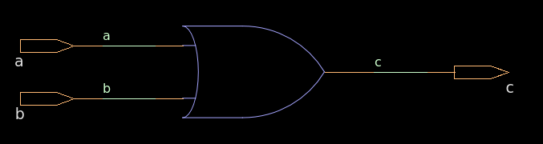

module combinational( input ,b, output c ); c = a b; 1. What is the module name?Combinational Logic:
Definition: ・Combinational logic produces outputs based solely on the current inputs without any memory of past inputs. The output changes immediately when the input changes. Key Characteristics: ・No memory or storage elements. ・Output is a direct function of the current inputs. ・Typically implemented using wire and assign statements in Verilog.